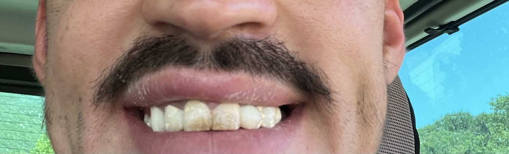
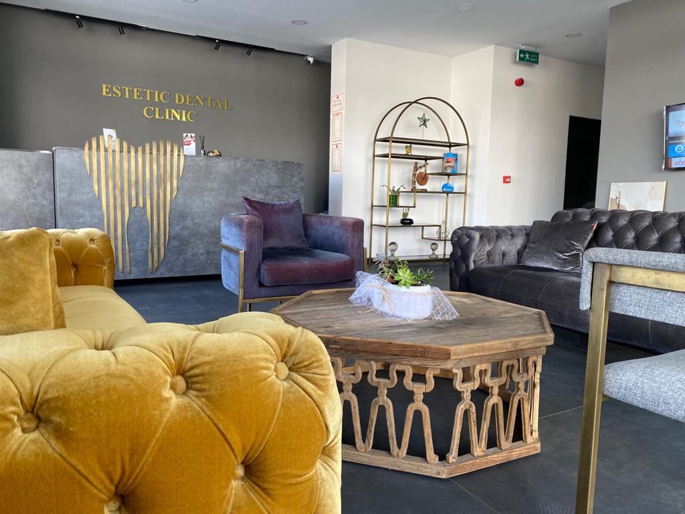
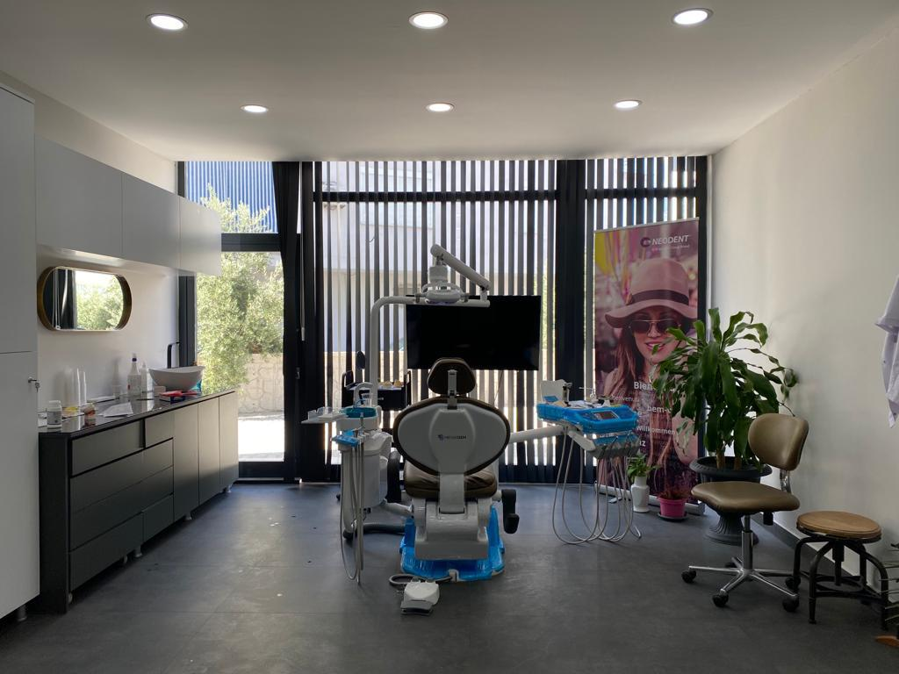
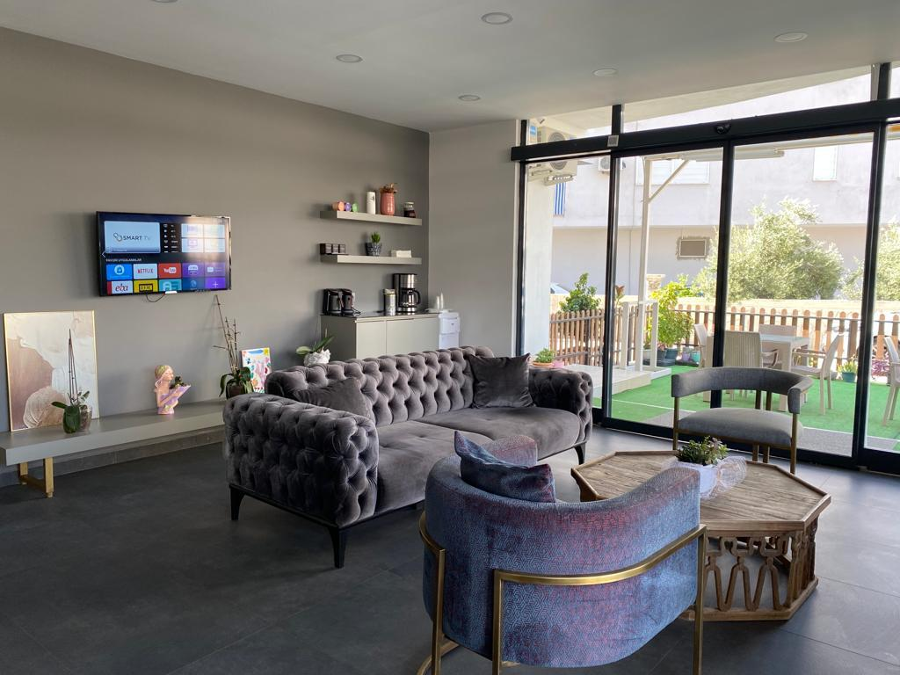

Demredent Ağız ve Diş Sağlığı Polikliniği'nde tedavi sürecinizin her adımında sizi dinleyen, sakin ve ilgili bir ekiple karşılaşırsınız. Demre'de yaşayanlar da bölgeye tatile gelenler de aynı özeni görür.
Tedavilerinizi seçin: tahmini fiyat aralığı, Antalya'da kalmanız gereken gün ve gün gün planınız anında çıksın.
Eksik dişlerin yerine, çene yapısı ve ihtiyaca göre planlanan implant uygulamaları yapılır.
Diş içindeki enfekte dokunun temizlenmesi ve dişin korunmasına yönelik tedavi uygulanır.
Çürüyen veya kırılan dişler, diş rengine uyumlu dolgu malzemeleriyle onarılır.
Diş yüzeyindeki plak ve taşlar temizlenerek diş eti sağlığının korunmasına destek olunur.
Kurtarılamayan ya da sorun yaratan dişler, hasta konforu gözetilerek çekilir.
Eksik ya da hasarlı dişlerin çiğneme ve görünüm işlevini desteklemek için protez ve kaplama çözümleri sunulur.




Ekibimiz hastalarına güler yüzle yaklaşır; tedavi sürecinde kendinizi rahat ve değerli hissetmeniz için çalışırız.
Tedavilerimizi temiz, düzenli ve titiz bir ortamda, konforunuzu gözeterek sürdürürüz.
İmplant gibi cerrahi işlemlerde ilgili ve bilgilendirici bir yaklaşımla süreci birlikte planlarız.
Demre'ye geldiğinizde kırılan ya da ağrıyan bir dişle karşılaşırsanız, ihtiyacınız olan ilgiyi göstermeye çalışırız.
📍 Gökyazı, Mehmet Usta Sokak 4/A, 07570 Demre/Antalya
🕑 Pzt–Cmt 09:00–19:00 · Paz kapalı